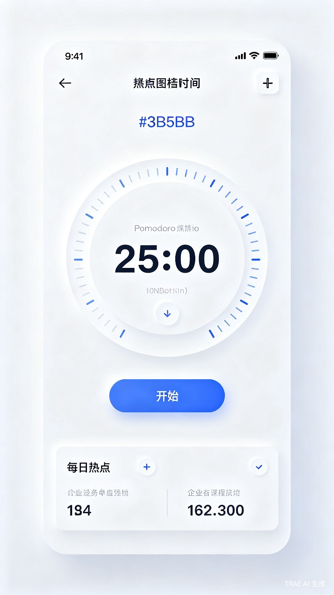

今天吃啥饭
鸿蒙元服务，无需安装、即用即走。专为纠结吃什么的用户随机推荐菜品，一键解决每日选择困难，轻松决定今天吃什么。
HarmonyOS 原生应用开发实践
鸿蒙元服务，无需安装、即用即走。专为纠结吃什么的用户随机推荐菜品，一键解决每日选择困难，轻松决定今天吃什么。

原生 ArkTS 开发的待办管理应用，支持本地数据持久化与卡片形态。采用声明式 UI 构建界面，遵循 HarmonyOS 设计规范，实现流畅的交互动效与状态管理。

隐私优先的本地记账工具，零权限申请，数据完全离线存储。界面极简，操作路径短，支持分类统计与月度报表导出。

基于番茄工作法的时间管理应用，极简界面，无干扰体验。支持自定义专注时长、休息提醒与每日专注统计，帮助用户建立高效工作节奏。